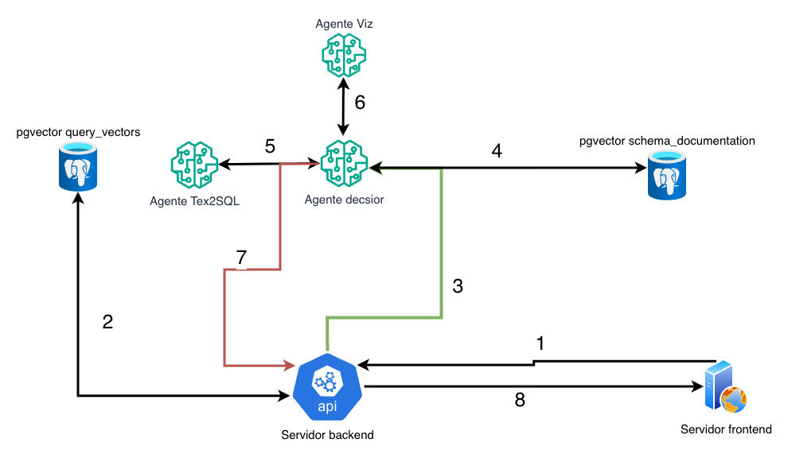
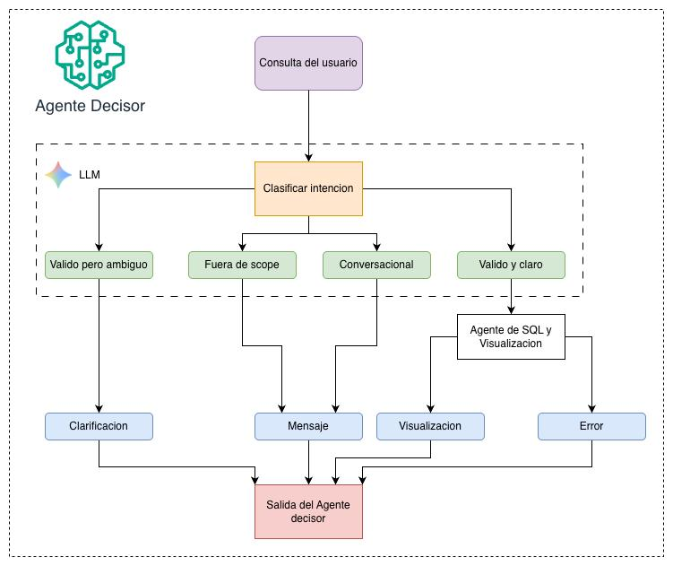
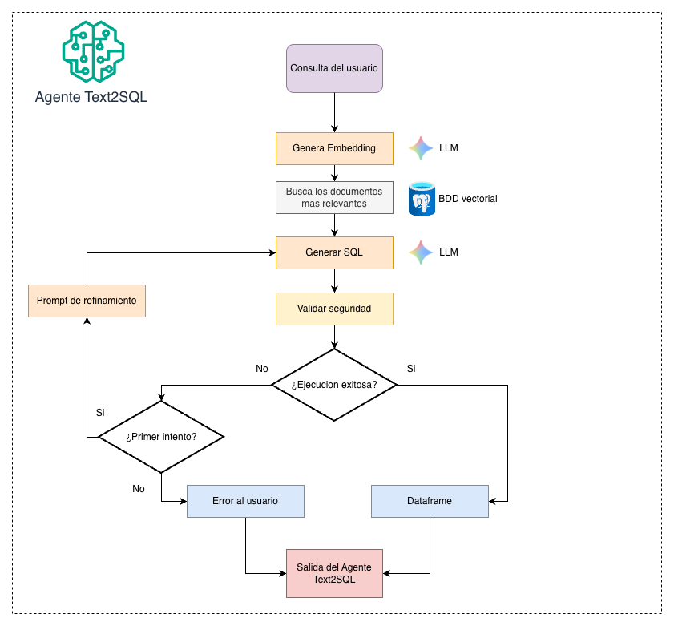
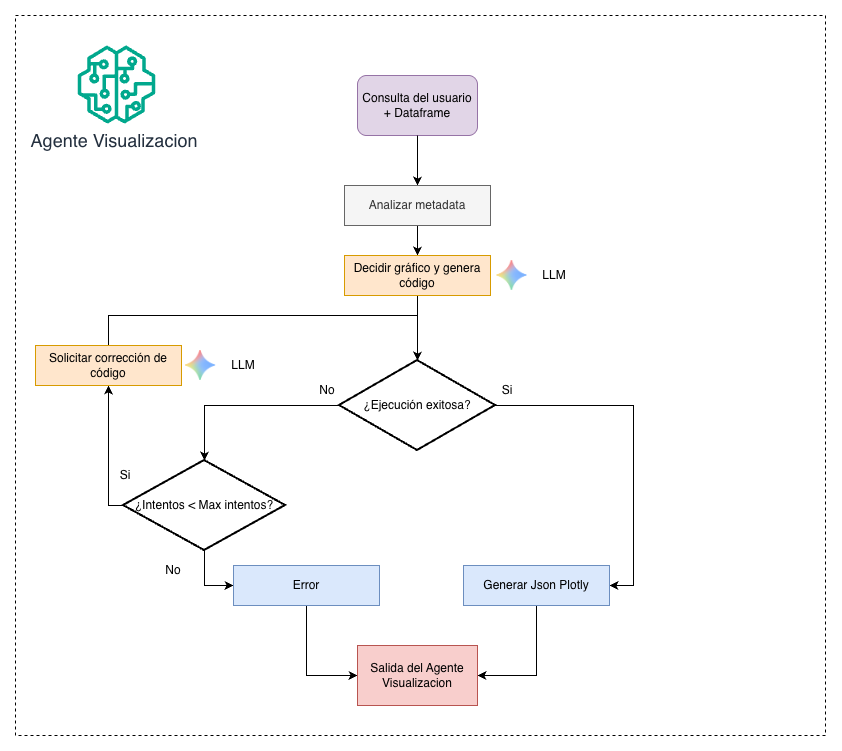
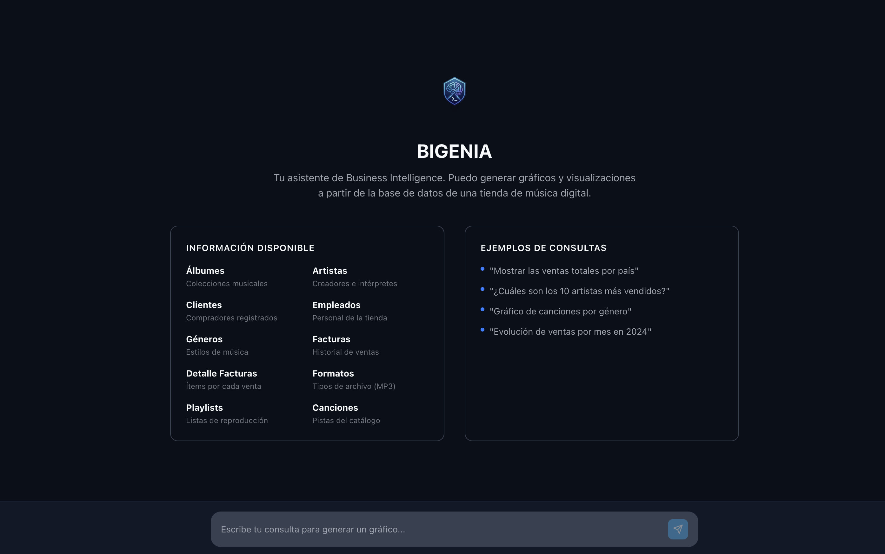
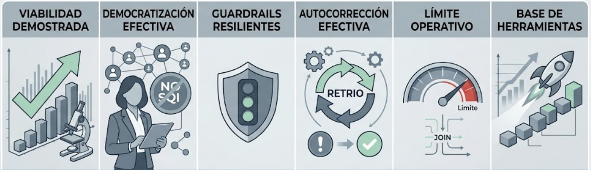

2026
Implementación de una Herramienta de Análisis de Datos para realizar Inteligencia de Negocios basada en Lenguaje Natural para PyMEs
Diseño de una arquitectura de agentes de IA para la generación dinámica de gráficos
Lucas J.
Martinez
Nahuel A. Carro
Contenido
El Problema
Son el motor de las economías latinoamericanas, pero enfrentan barreras críticas para adoptar herramientas de Business Intelligence.
Licencias e infraestructura que exceden el presupuesto de la PyME.
Ausencia de personal que gestione infraestructuras de datos complejas.
Interfaces técnicas que desalientan la modernización del sector empresarial.
La Oportunidad
Las decisiones se toman sin respaldo analítico,
limitando el crecimiento empresarial.
Existe una necesidad urgente de democratizar el acceso a la información estructurada.
¿Qué pasaría si cualquier usuario de negocio pudiera consultar sus datos simplemente hablando con ellos?
La Solución
Un sistema de Generative Business Intelligence (GenBI) que interpreta consultas en lenguaje cotidiano, las traduce en código estructurado y despliega los resultados mediante gráficos interactivos.
"Mostrá las ventas por país" — sin escribir una línea de SQL.
Orquestación especializada que gestiona todo el flujo de principio a fin.
Plotly.js con zoom, filtrado y exploración de datos en tiempo real.
Arquitectura

Agente Decisor

Agente Text2SQL

Agente de Visualización

Interfaz de Usuario
React · Tailwind CSS · Zustand — Prioridad en simplicidad, retroalimentación inmediata y accesibilidad.
Reduce fatiga visual y mejora accesibilidad.
Spinners y estados de carga del LLM.
Modificación instantánea de gráficos.
Activos visuales separados del chat.

Demostración
Evaluación
Evaluar SQL + gráficos mediante comparación exacta de texto es insuficiente. Se emplea un modelo avanzado como juez imparcial, provisto de una rúbrica estricta, para auditar el ciclo analítico completo.
¿Clasificó correctamente la intención del usuario según el contexto de la sesión?
¿El SQL resuelve la pregunta? ¿Tablas, filtros y JOINs son correctos en el esquema?
Ejecuta el código Python/Plotly en un sandbox seguro y verifica que la figura compile.
35 casos de prueba · 4 categorías (válidas, conversacionales, fuera de dominio, ambigüedades) · Modelo juez: gpt-oss-120b vía Groq · Puntaje continuo 1–5 + justificación · Integrado con LangSmith
Resultados
Análisis del 7.1% (Text2SQL): Los fallos se debieron a consultas con múltiples JOINs, el mecanismo de reintento mitiga la mayoría de errores sintácticos.
Perspectivas
Conclusiones

Reducción proyectada del tiempo de creación de reportes: de días a minutos, democratizando el acceso a la analítica de datos sin intermediarios técnicos.
Nuestros contactos
Lucas J. Martinez
Nahuel A. Carro